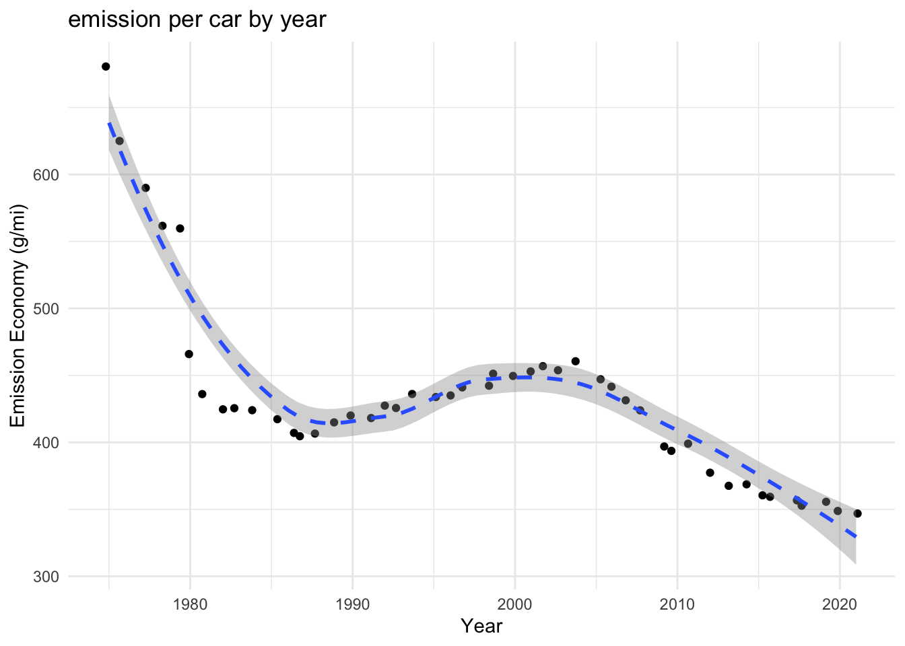
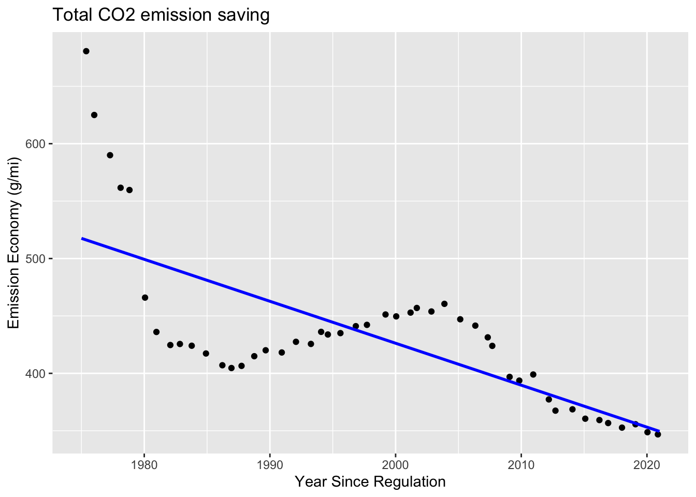
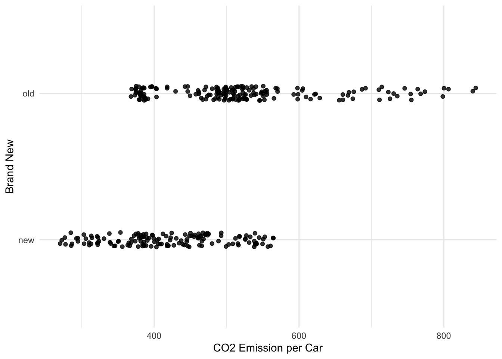
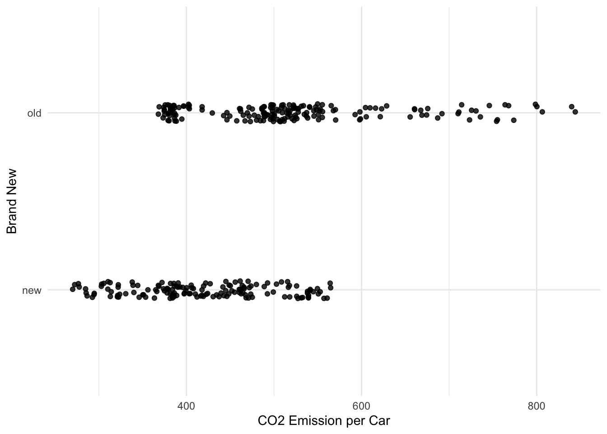
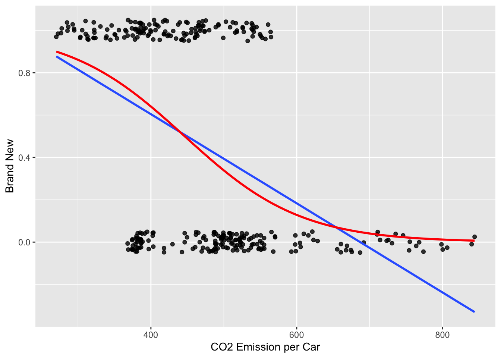

# Function to check if a column can be converted to numericis_numeric <-function(x) {all(!is.na(as.numeric(x)))}# Convert columns with numeric values as characters to numeric type, keep others as charactervehicle_info <- vehicle_info %>%mutate_if(~is.character(.) &&all(sapply(., is_numeric)), as.numeric, na.rm =TRUE)colnames(vehicle_info)[colnames(vehicle_info) =="Model_Year"] <-"year"vehicle <-left_join(temperature, vehicle_info, by =join_by(year))# ==========Accumulate emission===============cumulative_emissions <-read_csv("data/cumulative-co-emissions.csv")co2 <- cumulative_emissions %>%filter(Entity =="United States") colnames(co2) <-c("nation", "nation1", "year", "accu_emission") emission <-left_join(vehicle, co2, by =join_by(year))# ==========Accumulate emission===============transport_emission_rate <-read_csv("data/emission_percent_transport.csv")colnames(transport_emission_rate) <-c("year", "trp_emission_rate")transport_emission <-full_join(emission, transport_emission_rate, by =join_by(year))## ========== count car ================count_car <-read_csv("data/car2.csv")# Estimate the number of cars for years ranging from 1900 to 2022 using interpolationestimated_cars <-approx(count_car$year, count_car$car, xout =1900:2022)$y estimated_cars_data <-data.frame(year =1900:2022, number_of_car = estimated_cars)estimate_n_cars <-full_join(transport_emission, estimated_cars_data, by =join_by(year))percent_emission <- estimate_n_cars %>%mutate(transport_emission = accu_emission*trp_emission_rate*0.01)final <- percent_emission %>%mutate(emission_n_car = transport_emission/number_of_car) %>%subset(year >=1975)## ================ Filter data starting from the year 1975 ===============final_subset <- final %>%group_by(Regulatory_Class, Vehicle_Type) %>%filter(Regulatory_Class =="All", Vehicle_Type =="All")
Vehicles emission affects to the climate change
Introduction
During the industrial revolution, the pervasive utilization of fossil fuels has significantly contributed to the escalation of Carbon dioxide (CO2) emissions, exacerbating the adverse effects of global warming. Various factors have led to the surge in these emissions, with transportation accounting for a substantial one-third share, marking it as the primary contributor to the highest emissions recorded in 2021, as per the Environmental Protection Agency’s findings. The objective of this report is to scrutinize the potential of fossil fuels in powering transportation within the United States and to evaluate a proposal by the U.S. government that suggests a partial departure from the standards aimed at curbing fuel consumption, consequently reducing carbon dioxide gas emissions. To mitigate dependence on foreign oil reserves, the United States implemented Corporate Average Fuel Economy (CAFE) standards in the 1975, mandating each corporation selling passenger cars in the country to attain improved average emission efficiency.
These two models signifies the influence of the implementation of CAFE regulations on the reduction of CO2 emissions from vehicles and overall temperature. As these regulations were initiated in 1975, a waiting interval was factored in to enhance accuracy before analyzing the trend, allowing for a comprehensive evaluation of the regulation’s effect on CO2 emission trends from number of vehicles.
\[\text{Emission per car} = \beta_0 + \beta_2 \text{Year since Regulation} + \beta_3 \text{Number of Car} + \epsilon\]
\(\beta_0\) represents the intercept term.
\(\beta_1\) is the coefficients indicating the relationship between motor vehicles CO2 emissions by average annual temperature respectively.
\(\beta_2\) is the coefficients indicating effect of an additional year since CAFE on CO2 emission savings.
\(\beta_3\) is the coefficients indicating the relationship between number of car on the emission per car holding year.
\(\epsilon\) is the error term accounting for unexplained variability in the model.
Data explore
Earth Surface Temperature: This dataset, sourced from the EPA, provides information on the surface temperature, specifically focusing on Ferrnite.
Vehicle: Within EPA dataset, various pieces of information are available.
Real_World_CO2_g_mi: This metric represents the emissions per car and is crucial for assessing the efficiency of vehicles in reducing CO2 emissions.
Regulatory_Class: This classification helps determine whether a vehicle is a car or a truck.
Accumulative Emission: This data originated from ‘Our World in Data’
Transportation Emission: This dataset, obtained from the WorldBank, sheds light on emissions related to transportation.
Number of Vehicles: Unfortunately, there is no dataset available on the current website. However, projections for the years 1900, 1901, 2020, 2021, 2022, and 2023 have been included in this dataset. (Data availability)
Highlights
Linear regression
Multi-linear regression
Interaction model
Logit regression
Null Hypothesis
Analysis
Linear Regression Model: Earth’s Surface Temperature and Emissions from Transport
The linear regression model examining the relationship between Earth’s surface temperature and emissions from transport is represented as:
# Create a line plot to visualize the relationship between transportation emissions and Earth surface temperature over the years# Define the plot using ggplottemp_per_emssion_by_year <-ggplot(final, aes(x = transport_emission, y = temp)) +geom_line() +geom_smooth(linetype ="dashed") +labs(x ="Transportation Emission (CO2e tonne)", y ="Earth Surface Temperature (F)", title ="Emission per Temperature (from 1975)") +theme_minimal()# Display the plottemp_per_emssion_by_year
`geom_smooth()` using method = 'loess' and formula = 'y ~ x'
These findings suggest that around 32% of the variability in transportation emissions can be explained by Earth surface temperature. This aligns with our scatter plot, depicting a consistently strong positive relationship. The favorable F-statistics and low p-values further indicate that the model provides a good fit to the data. Due to low \(R^2\) , it need to find the better fit.
Code
# Fit a linear regression modelmodel <-lm(temp ~ transport_emission, data = final_subset)# Display a summary of the regression analysissumm(model)
Observations
40 (7 missing obs. deleted)
Dependent variable
temp
Type
OLS linear regression
F(1,38)
17.96
R²
0.32
Adj. R²
0.30
Est.
S.E.
t val.
p
(Intercept)
-1.26
0.48
-2.65
0.01
transport_emission
0.00
0.00
4.24
0.00
Standard errors: OLS
This seems to exhibit a slightly better fit, as indicated by the higher $R^2$ and adjusted $R^2$ values. The Earth’s temperature increases with the rise in emissions from the transportation sector. Notably, there are significant errors associated with omitted variables, such as emissions from other sectors, including industry and power plants. Additionally, the scope needs to expand beyond the USA to encompass a global perspective.
Code
# Fit a linear regression modelmodel_log <-lm(temp ~log(transport_emission), data = final_subset)# Display a summary of the regression analysissumm(model_log)
Observations
40 (7 missing obs. deleted)
Dependent variable
temp
Type
OLS linear regression
F(1,38)
19.98
R²
0.34
Adj. R²
0.33
Est.
S.E.
t val.
p
(Intercept)
-48.56
11.02
-4.41
0.00
log(transport_emission)
1.96
0.44
4.47
0.00
Standard errors: OLS
Linear Regression Model: Emission per car and Year since Regulation
This model defines the how CAFE regulation effects to the transportation emission. This model explains the vehicle emission effects on CAFE regulation with number of vehicle.
\[\text{Emission per car} = \beta_0 + \beta_2 \text{Year since Regulation} + \epsilon\]
In this plot, emission per car decreasing since regulation started. There was no omitted variable in this model. Based on this information, we would like to how regulation affects on overall transport emission. This model proves that the model shows the interaction between the regulation and number of the car affects on the emission per car. Year since regulation and number of car are independent variables, but it is depended on emission per car variable.
Code
# Create a line plot using ggplot for 'emission_per_car' from the filtered dataone_car_per_emission<-ggplot(final_subset, aes(x = year, y = Real_World_CO2_g_mi)) +geom_jitter() +geom_smooth(linetype ="dashed") +labs(x ="Year",y ="Emission Economy (g/mi)",title ="emission per car by year") +theme_minimal()one_car_per_emission
`geom_smooth()` using method = 'loess' and formula = 'y ~ x'

Model without Interaction: Total CO2 emission saving
\[\text{emission per car} = \beta_0 + \beta_2 \text{year since regulation} + \beta_3 \text{number of car} + \epsilon\]
\(\beta_0\): The predicted emission per car before the regulation is 476 grams per mile (mi/g).
\(\beta_2\): The emissions per car decrease by 5 grams per mile for every year since the regulation, holding the number of cars constant. The coefficient β₂ can be interpreted as the effect of an additional year since the regulation was implemented on emission savings or reduction of emission.
\(\beta_3\): This coefficient represents the estimated change in emission per car for each additional unit in the “number of car” variable while holding “year since regulation” constant. It implies that as the number of cars increases, overall emission is increasing.
Plot
Code
# Create a scatter plot with a regression lineggplot(final_subset, aes(x = year, y = Real_World_CO2_g_mi)) +geom_jitter() +# Scatter plotgeom_smooth(method ="lm", formula = y ~ x, se =FALSE, color ="blue") +# Regression linelabs(x ="Year Since Regulation", y ="Emission Economy (g/mi)", title ="Regression Plot") +theme_minimal()

In this analysis, p-value is 9.1e-9, which is < 0.05 can reject null hypothesis. R square is pretty low, which is 0.5.
Code
## Convert 'year' to (year - 1974): Year in 1975 becomes 1.final_subset$years <- final_subset$year -1974## Fit a linear model without interactionmodel_not_int <-lm(Real_World_CO2_g_mi ~ years + number_of_car, data = final_subset)summ(model_not_int, digits =10)
Observations
47
Dependent variable
Real_World_CO2_g_mi
Type
OLS linear regression
F(2,44)
23.9688718881
R²
0.5214152731
Adj. R²
0.4996614218
Est.
S.E.
t val.
p
(Intercept)
476.2446425522
111.8001104335
4.2597868706
0.0001060282
years
-5.1880489159
3.8176342030
-1.3589696236
0.1810818273
number_of_car
0.0000000533
0.0000001314
0.4057541837
0.6868896864
Standard errors: OLS
Interaction model: Total CO2 emission saving
\[\text{emission per car} = \beta_0 + \beta_2 \text{year since regulation} + \beta_3 \text{number of car} +\beta_4 \text{year since regulation x number of car} + \epsilon\]
\(\beta_4\): This is interaction term implies the influence of the number of car on emission per car slightly changes as the year since regulation starts and it is defined the barometer of total CO2 emission saving.
Decreasing the p-value compared to two models suggests that the interaction model between the year since regulation and the number of cars rejects the notion that their combined effect has no impact on understanding variations in CO2 emissions per car. Additionally, the higher \(R^2\) and adjusted \(R^2\) values signify that this interaction model better fits the data and captures a greater proportion of the variability in emissions compared to the model without the interaction term.
Code
## Fit a linear model with interactionmodel_int <-lm(Real_World_CO2_g_mi ~ years + number_of_car + years:number_of_car, data = final_subset)summ(model_int, digits =10)
Observations
47
Dependent variable
Real_World_CO2_g_mi
Type
OLS linear regression
F(3,43)
24.5633246590
R²
0.6315021888
Adj. R²
0.6057930392
Est.
S.E.
t val.
p
(Intercept)
378.7346753916
102.8984504157
3.6806645179
0.0006442009
years
-25.7574887204
6.6647727476
-3.8647212284
0.0003704727
number_of_car
0.0000002524
0.0000001292
1.9534542357
0.0572918953
years:number_of_car
0.0000000068
0.0000000019
3.5841371809
0.0008572249
Standard errors: OLS
Logit regression using Categorical response variable: New and Old Vehicle
We will further study the new vehicles have effectively reducing emission. This is the showing two plots, which old vehicle before 2000 year model, and new vehicle after 2000 year model with the linear line.
# Create a new variable 'new_brand' based on the year# Filter the dataset to include only "Car" and "Truck" in Regulatory_Classfinal_vehicle_type <- final %>%mutate(new_brand =ifelse(year >2000, 'new', 'old')) %>%filter(Regulatory_Class %in%c("Car", "Truck"))# Create a jitter plot to show CO2 emissions and new/old classificationggplot(data = final_vehicle_type, aes(y = new_brand, x = Real_World_CO2_g_mi)) +geom_jitter(width =0, height =0.05, alpha =0.8) +labs(x ="CO2 Emission per Car", y ="Brand New") +theme_minimal()

This involves showcasing two plots: one for older vehicles predating the year 2000 model and another for newer vehicles following the 2000 model year, each presented with a linear trend line.
Code
# Create a binary variable 'brand_new' based on 'new_brand'final_vehicle_type <- final_vehicle_type %>%mutate(brand_new =ifelse(new_brand =="new", 1, 0))# Create a jitter plot to visualize CO2 emissions and brand new classificationbinary <-ggplot(data = final_vehicle_type, aes(y = brand_new, x = Real_World_CO2_g_mi)) +geom_jitter(width =0, height =0.05, alpha =0.8) +geom_smooth(method ="lm", se =FALSE) +labs(x ="CO2 Emission per Car", y ="Brand New") binary
`geom_smooth()` using formula = 'y ~ x'

The odds ratio of 0.99 indicates that for each one-unit increase in the ‘emission per car’ there is an approximate 1% reduction in emissions for newer vehicle models compared to older ones, tending to exhibit approximately 1% lower emissions concerning their CO2 levels compared to older models. This association highlights the potential for newer vehicle models to contribute slightly less to CO2 emissions in real-world scenarios compared to their older counterparts.
Code
# Create a logistic regression model for predicting 'brand_new'mod_new_car <-glm(brand_new ~ Real_World_CO2_g_mi, data = final_vehicle_type, family ='binomial') # Create a table summarizing the logistic regression modelmod_new_car %>%tab_model()
brand new
Predictors
Odds Ratios
CI
p
(Intercept)
260.62
61.89 – 1258.49
<0.001
Real World CO2 g mi
0.99
0.98 – 0.99
<0.001
Observations
329
R2 Tjur
0.227
Visualizing logistic regression
This is combining two models: linear regression model and logistic regression model, proving insight into both linear and non-linear relationships between old and new vehicles variables.
Code
# Create a binary plot with linear and logistic regression linesggplot(data = final_vehicle_type, aes(y = brand_new, x = Real_World_CO2_g_mi)) +geom_jitter(width =0, height =0.05, alpha =0.8) +labs(x ="CO2 Emission per Car", y ="Brand New") +geom_smooth(method ="lm", se =FALSE) +# Add linear regression linegeom_smooth(method ="glm", se =FALSE, color ="red", method.args =list(family ="binomial")) # Add logistic regression line in red
`geom_smooth()` using formula = 'y ~ x'
`geom_smooth()` using formula = 'y ~ x'

Logistic regression: Truck and Car
In the context of environmental impact and vehicle emissions, there’s a growing concern about the differences in CO2 emissions per mile between different types of vehicles. To evaluate and address these concerns, a statistical analysis is conducted to compare the mean CO2 emissions per mile between two categories of vehicles: cars and trucks. This analysis aims to determine whether there’s a significant difference in CO2 emissions per mile between these vehicle types.
The coefficient related to ‘Regulatory_ClassTruck’ in the logistic regression model indicates an interesting finding. It suggests that the odds of a brand new car reducing its emissions are approximately 22 times higher compared to trucks. This translates to an approximate decrease of emissions by 2.8% in a new truck model compared to older models. This suggests that trucks have not significantly improved their efficiency over the span of nearly 50 years.
Code
# Fit the logistic regression modelmod <-glm(brand_new ~ Real_World_CO2_g_mi + Regulatory_Class, data = final_vehicle_type, family = binomial)# Extract coefficients, exponentiate, and tidy the resultsexp(coef(mod))
This diagram clearly shows that the distribution of vehicle emissions is highly right-skewed compared to trucks. This indicates that the Environmental Protection Agency (EPA) has successfully regulated car emissions. However, there is a need for more effort to reduce emissions from trucks.
Code
gghistogram(final_vehicle_type, x ="Real_World_CO2_g_mi",add ="mean", rug =TRUE,color ="Regulatory_Class", fill ="Regulatory_Class",palette =c("#00AFBB", "#E7B800")) +labs(title ="Comparison of CO2 Emissions between Car and Truck Groups")
This finding aligns with EPA’s Clean Truck Plan, unveiled on August 5, 2021. The plan aims to curb CO2 gas emissions and other harmful air pollutants from heavy-duty trucks. It outlines a series of three rulemakings that will come into effect for heavy-duty engines and vehicles starting from the model year 2027.
Hypothesis to comparing two models: Car and Truck
\[H_{0}: \mu_{car} - \mu_{Truck} = 0\]
\[H_{A}: \mu_{car} - \mu_{Truck} \neq 0\]
The p-value of 2.22e-14 is less than any commonly used significance level (such as 0.05), indicating strong evidence to reject the null hypothesis. Therefore, there is strong evidence to suggest that there is a significant difference in CO2 emissions per mile between the car and truck.
There is a 95% confidence that the range between 84.8 and 127.7 includes the true difference in CO2 emissions per mile between cars and trucks.
Code
# in Regulatory_Class, "All", "Car", and "Truck", so only left "Car" and "Truck" in dataset. final_class <- final %>%filter(Regulatory_Class %in%c("Car", "Truck"))# Separate data into 'Car' and 'Truck' groupscar <- final_class %>%filter(Regulatory_Class =="Car")truck <- final_class %>%filter(Regulatory_Class =="Truck")# Conduct a t-test to compare CO2 emissions between 'Car' and 'Truck' groupst_test_result <-t.test(truck$Real_World_CO2_g_mi, car$Real_World_CO2_g_mi, conf.level =0.95)# Uncomment the next line to display the summary statistics using tab_modelt_test_result
Welch Two Sample t-test
data: truck$Real_World_CO2_g_mi and car$Real_World_CO2_g_mi
t = 9.7546, df = 283.31, p-value < 0.00000000000000022
alternative hypothesis: true difference in means is not equal to 0
95 percent confidence interval:
84.81797 127.70204
sample estimates:
mean of x mean of y
520.268 414.008
Conclusion
The analysis highlights the impact of Earth’s surface temperature and regulatory standards, like Corporate Average Fuel Economy (CAFE), on reducing emissions per car. Logistic regression underscores the lower emissions of newer vehicles, emphasizing the need for ongoing technological advancements. The significant disparity in emissions between cars and trucks calls for targeted efforts to enhance truck efficiency.
Future work
Future endeavors should focus on a global perspective, assess policy effectiveness, explore technological advancements for emissions reduction, and monitor long-term trends. Continuous policy evaluation is crucial, considering initiatives like the Clean Truck Plan, while strengthening public awareness and advocacy efforts will foster sustainable practices in transportation.
![]()